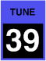

FILTER tune
These control the basic pitch of each filter before modulation. The values are shown as the scale pitch heard if the resonance is cranked all the way up so that the filter becomes an oscillator, and middle C is played. The default value is C11, the highest the filter can be tuned to, so that you hear an unfiltered sound when you begin to edit a scratch program.
If you want the pitch to track the keyboard, you should set this to C5 (middle C), choose Glide A or Glide B for one of the Mod Select inputs, and set the corresponding Mod Depth to 32, since there are 32 semitones per modulation unit.
Toolkit
These are contained in the Filter tune clusters within the Filter section.
Chroma panel
These are contained in the CUTOFF section of the right panel, under the following parameter number:
|  |
These appear in the display as Filter Tune.
MIDI
These are accessed via the following NRPNs:
| A | 1,58 | |
| B | 2,58 |
Values
The values are displayed as scale pitches:
| MIDI | display | ||
| 0 | F0 | (about 11Hz) | |
| • • • |
• • • |
(semitones) |
|
| 127 | D#10 | (default, about 16KHz) |